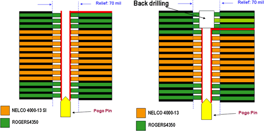
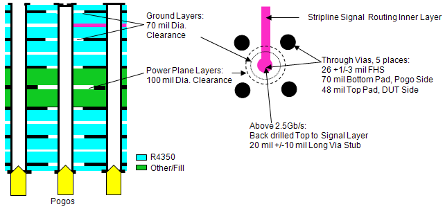
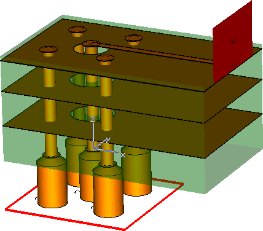
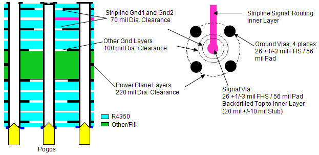
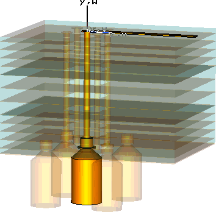
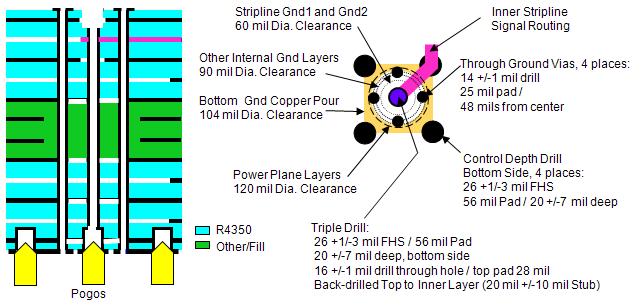
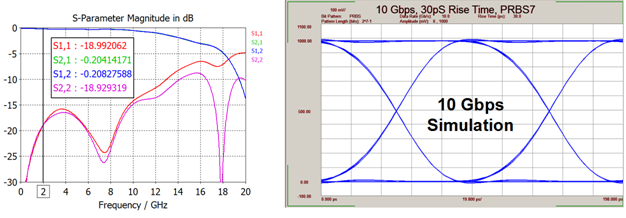
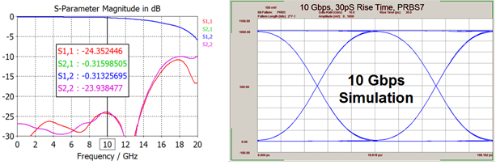
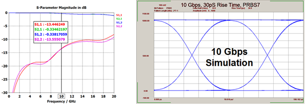

Pogo via examples
Advantest optimized the pogo via design examples below for standard, high-speed, and ultra-high-speed digital applications.
The standard digital design with signal via back-drilling has the simplest fabrication structure. It will work with all digital cards, including Pin Scale HX cards (SmarTest 7). For higher density, low crosstalk performance on Pin Scale 9G and Pin Scale HX card applications when needed, we recommend the ultra-high-speed (UHS) pogo via.
The high-speed (HS) pogo via provides little performance improvement when compared to the standard pogo via footprint with back-drilled signal vias. The HS-design is only recommended when the higher performance is required, but the UHS fabrication complexity is not desired.
You can use these optimized pogo via footprints also for different PCB stack-ups without significant performance loss, since distances are short and the range of PCB material dielectric properties is limited. The largest impact on high-speed performance is from the via stub length and the need for back drilling for multi-gigabit data rates.
Standard pogo via
The standard pogo via design without back drilling is recommended for applications below 2.5 Gb/s. Above 2.5 Gb/s the standard pogo via requires back drilling for inner layer connections to keep the via stub length less then ~25 mils. The reduction of the via stub with back drilling enables the standard pogo via design to be used with higher speed PS9G, PS3600 (SmarTest 7), and Pin Scale HX cards (SmarTest 7). The figure shows the pogo via design diagram for microstrip and stripline launches. The standard pogo via is designed with high-speed low-loss dielectric materials. But due to the short physical length there is little loss in performance when changing to other types of PCB materials. Therefore we recommend to retain the via topology when using different PCB materials.


High-speed pogo via
Advantest does not recommend the high-speed (HS) pogo via design for new designs. The use of two different ground anti-pad diameters provides little performance improvement compared to the standard pogo via. On the other hand it significantly increases the complexity of routing to ensure ground coverage over traces routed through the pogo pin via field. High-speed (HS) pogo vias are used in a few applications where performance needs to be improved, but there are restrictions on using the ultra-high-speed (UHS) pogo via design with its higher cost because of drilling complexity. The HS pogo via was an early design, but with the development of the UHS pogo via, we recommend to use the UHS pogo via when the highest level of performance is needed.
The standard pogo via is designed with high-speed low-loss dielectric materials, but due to the short physical length there is little loss in performance when changing to other types of PCB materials. Therefore we recommend to retain the via topology when using different PCB materials. The figure shows the pogo via design diagram for microstrip and stripline launches.


In this high-speed pogo via design, the important point is the ground clearance (or antipad) below the transition to the microstrip (or in case of a stripline above and below the transition to the stripline). On these layers the ground clearance is reduced to 70 mil compared to 100 mil in the other layers. The 70 mil ground clearance reduces the discontinuity in the transition, while the 100 mil ground clearance keeps the needed impedance on the via structure as the signal crosses those layers.
Ultra-high-speed pogo via
The ultra-high-speed (UHS) pogo via provides the highest density of routing with the lowest crosstalk, while also increasing the bandwidth of the pogo via performance. Pin Scale 9G and Pin Scale HX card (SmarTest 7) channels can benefit from this additional performance. However, fabrication costs and complexity do increase with the utilization of double and triple drilling of via structures.


This ultra-high-speed pogo via design tries to improve the performance by breaking the 100 mil pitch requirement between the signal and ground vias. This is accomplished by a controlled depth drill on the ground pogo pin vias, and drilling a new smaller pogo via. This design also requires two different drill sizes on the signal via, which results in a more complex and expensive pogo via design.
Other advantages of this design are the increased layout space between the pogo vias, and the fact that pogo pin 1 will have four ground vias.
Comparison of pogo via designs
Simulations provide comparison of the relative performance between the three pogo via types. The data shows that all of the pogo vias can provide an open eye at 10 Gb/s, when back drilling is used to remove long via stubs on inner layer routing connections.
Standard pogo via with back drilling to remove the via stub (simple design):

High-speed (HS) pogo via (improved impedance matching):

Ultra-high-speed (UHS) pogo via (widest bandwidth, lowest crosstalk):

Functional changes
- Introduced before SmarTest 6.3.2
- SmarTest 7.1.4: Modified values in via examples